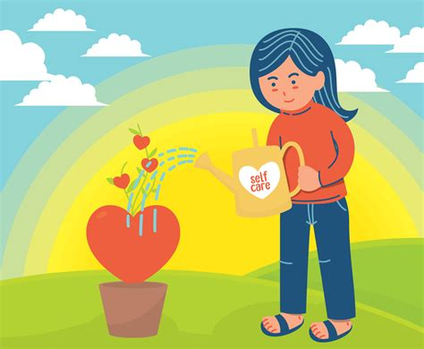

Welcome to Self-Care Monday Today, we’ll discuss the importance of self-care and some strategies for incorporating self-care into your routine.
Self-care involves taking intentional steps to prioritise your physical, emotional, and mental well-being. Self-care is not selfish or indulgent but essential to maintaining overall health and well-being.
Here are some strategies for incorporating self-care into your routine:
Remember, self-care is an essential aspect of maintaining overall health and well-being. Making time for yourself, practising mindfulness, getting enough sleep, eating well, and engaging in physical activity can all help promote self-care. If you struggle to incorporate self-care into your routine, consider contacting a mental health professional for additional support. They can help you identify underlying issues and develop strategies for prioritizing self-care in your daily life.